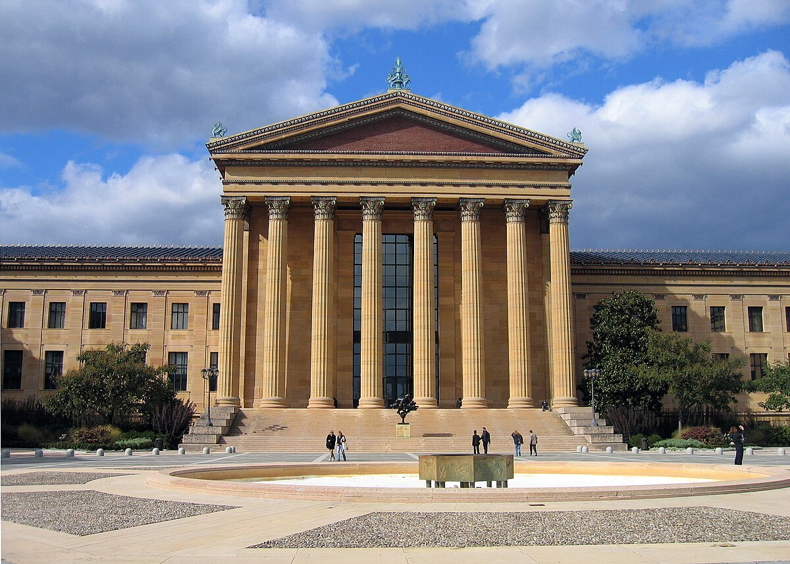

Explore

Our mission
MonoMuse exists to show how art and technology shape each other—and how both belong to everyone. We commission new work, preserve experimental pieces, and create spaces where visitors can slow down, play, and question what a museum can be in a digital age.
Who we serve
We built MonoMuse for anyone curious about creative technology, not only specialists. Our community includes:
- Students and educators exploring STEAM connections in and out of the classroom
- Local families and visitors looking for hands-on weekends and holiday programs
- Artists, designers, and engineers who want to test ideas with a public audience
- Researchers and industry partners studying how people experience interactive culture
Founding year
MonoMuse opened its doors in 2019, born from a small collective of Pittsburgh artists and CMU researchers who wanted a permanent home for tech-forward exhibitions that did not fit traditional gallery models.
Milestones
From a single pop-up lab to a full campus partnership, a few moments defined who we became:
- 2019 — Launch weekend with three inaugural installations and a 48-hour “code & clay” marathon
- 2021 — First international residency exchange with a media lab in Seoul
- 2023 — Youth access program expanded to free field trips for every city high school
- 2025 — New immersive wing dedicated to sound, light, and responsive environments
Visit in person or online
Stop by to see the building, the café, and the workshop studios, or start with our digital tours and educator kits. However you arrive, we hope you leave with one new question—and one new favorite work.